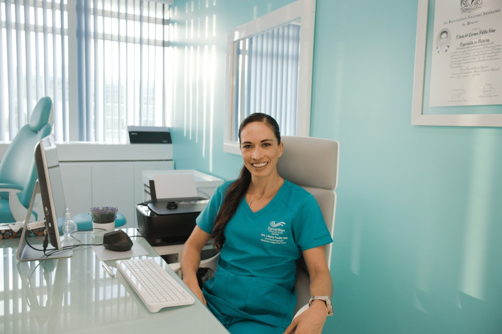
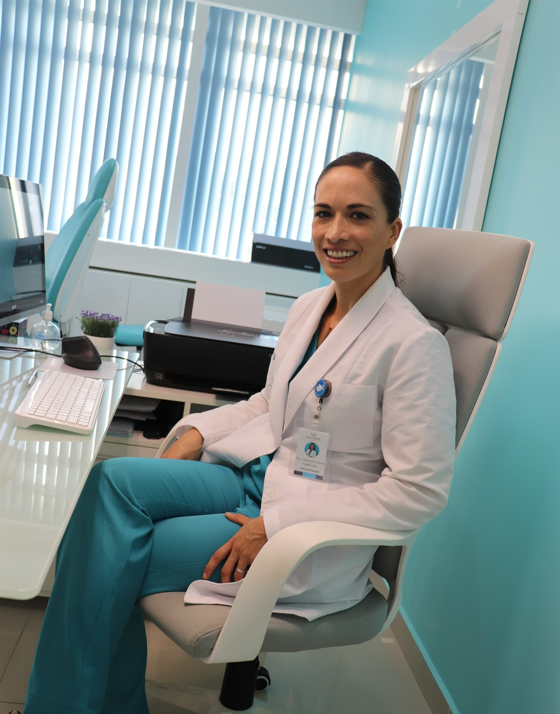
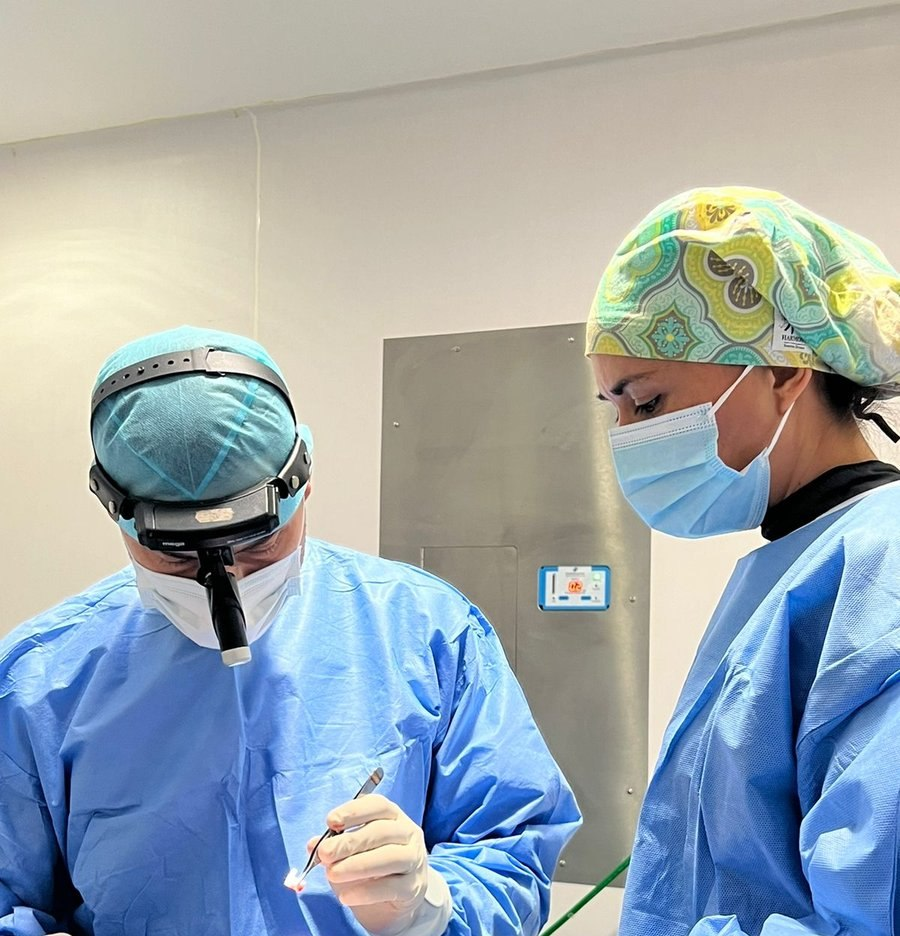
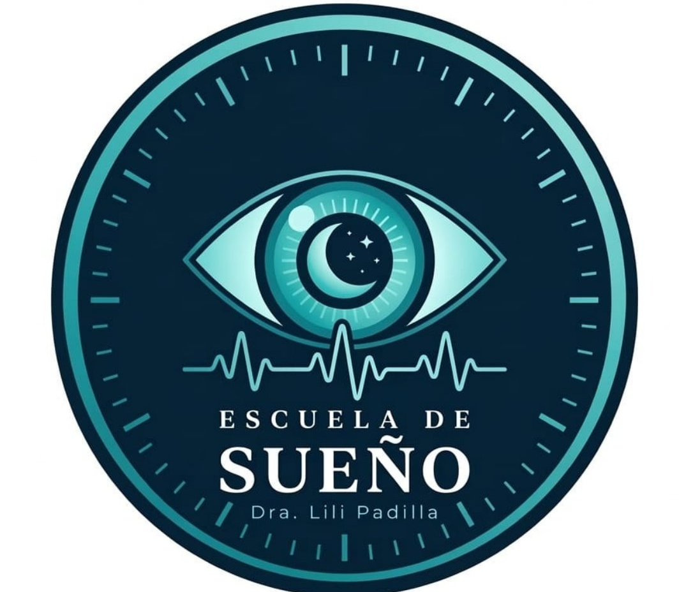

Consulta
$1,000 MXN
Videoconsulta o presencial en Cancún. Revisamos tu historia y tus síntomas para definir juntos el siguiente paso. Se agenda en Calendly.
Agendar →
Otorrinolaringóloga · Especialista en Sueño · Cancún
El sueño no se pierde. Se comprende y se entrena.
Cédula CE 9181490 · UNAM · Cancún, México
Consulta · Diagnóstico · Tratamiento
Desde una videoconsulta hasta cirugía de vía aérea. El camino lo decidimos juntos.
$1,000 MXN
Videoconsulta o presencial en Cancún. Revisamos tu historia y tus síntomas para definir juntos el siguiente paso. Se agenda en Calendly.
Agendar →Desde $5,000 MXN
Estudios simplificados y completos, según lo que necesites — desde tu hotel o tu domicilio. Herramientas a tu alcance para mejorar tu recuperación y evaluar tu respiración nocturna: oximetría, movimientos y fases de sueño. Yo interpreto tus resultados personalmente.
Consultar →Atención integral
Más que una evaluación, es atención integral: hábitos diarios, estilo de vida, nutrición, movimiento y datos de laboratorio medidos. Con eso te damos recomendaciones específicas para tu sueño y tu respiración — hacia una mejor recuperación y más longevidad.
Conocer →Evaluación personalizada
Diagnóstico integral. CPAP, DAM, cirugía y terapia miofuncional.
Evaluar →Evaluación pediátrica
Amígdalas, adenoides, respiración oral. El sueño de tu hijo importa.
Consultar →Programa estructurado
Ejercicios para la musculatura orofaríngea. Base del tratamiento sin cirugía.
Explorar →Evaluación previa requerida
Es el Protocolo S·E·R: dos otorrinos, cada uno maestro en su área —la nariz y el sueño—, evaluamos tu caso clínico completo para darte un tratamiento integral. Junto al Dr. Jorge Barbachano Torres partimos del laboratorio de sueño y llegamos a la cirugía solo cuando el dato lo indica: septoplastia, rinoseptoplastia, reducción de cornetes, endoscopia bajo sueño y uvulopalatofaringoplastia. Preparación nasal, cirugía funcional y rehabilitación respiratoria completa. Lo que se perdió, se reentrena.
Evaluar con la Dra. Lili →¿Te identificas?
El ronquido, el cansancio que no cede, el rendimiento que se estancó — casi nunca son "normales". Son señales de un sistema que pide atención, no sentencias con las que haya que vivir. Si te reconoces en alguno de estos casos, aquí empieza tu respuesta.
El sueño es donde ocurre la adaptación. Si duermes mal, tu rendimiento tiene un techo invisible que no vas a poder cruzar entrenando más.
Hay un punto donde el cansancio deja de ser "de la vida" y se convierte en un diagnóstico. Ese límite importa reconocerlo.
Funcionas a potencia reducida y no lo sabes. El sueño fragmentado destroza la toma de decisiones mucho antes de que lo notes.
Cancún no es solo playa. Es acceso a tecnología diagnóstica de primer nivel, atención en inglés y precios que tienen sentido.
Perimenopausia, embarazo, postparto. Los cambios hormonales fragmentan el sueño. Hay respuestas reales para esto.
Si tu pareja ya duerme en otra habitación, es hora. El ronquido es un síntoma con diagnóstico, no un hábito con el que vivir.

Sobre mí
Estudié medicina en Guadalajara, en la UAG, y me especialicé en Otorrinolaringología y Medicina del Sueño por la UNAM. Ahí estuve a cargo del servicio de otorrinolaringología en la Clínica de Trastornos del Sueño de la UNAM — y esa experiencia fue la que me llevó a abrir mi propia clínica de sueño en Cancún, con su laboratorio. Completé además un Diploma en Endocannabinología en el IPN.
En el camino aprendí algo que no venía en los libros: el sueño no vive solo de noche. Responde a cómo respiras, cómo te mueves, cómo nutres tu cuerpo, cómo respondes al estrés. Por eso dejé de tratar el síntoma con una pastilla y empecé a verlo como un sistema: el insomnio, el ronquido, como datos de un desequilibrio. Y cuando tratamos el sueño desde sus bases, le damos equilibrio al cuerpo — que es, al final, lo que sostiene la salud.
Hoy ejerzo desde la experiencia, con una sola meta: que mis pacientes estén aún mejor. Mi trabajo no termina en un CPAP. Es el Protocolo S·E·R — evaluar a la persona completa: su sueño, su respiración, sus hábitos, su movimiento y su nutrición, para tratar la raíz y no solo apagar el síntoma. Porque dormir bien no es la meta final: es la base de una vida más larga y con mejor rendimiento.
Aplico en mí lo que enseño. En esta etapa entreno fuerza — sé que es mi mejor inversión en longevidad — y uso mi cuerpo como mi primer laboratorio. Co-autora de Trastornos del sueño en casos clínicos (Editorial Académica Española, 2016).
S · E · R — Sueño · Equilibrio · Respiración
S·E·R no es un aparato ni una cirugía suelta. Es un protocolo: evaluamos al paciente completo — su sueño, su respiración, sus hábitos, su movimiento y su nutrición — para tratar la raíz del desequilibrio, no solo apagar el síntoma. Dos especialistas trabajando en equipo, cada uno en la maestría de su área —la nariz y el sueño—, dedicados a ti.

Otorrinolaringología · Cirugía funcional y estética nasal · Hospital Galenia
Otorrinolaringólogo egresado de la Universidad Veracruzana. Realizó su alta especialidad en Cirugía Funcional y Estética Nasal con su maestro, el Dr. Héctor Marín, donde se formó en la técnica bajo tumescencia. Evalúa la vía aérea y opera cuando el dato lo indica — pero no se queda ahí: aplica el Protocolo S·E·R en sus pacientes. Antes de cada cirugía se estudia el sueño, y cada persona entra a un programa de respiración nasal y trabajo por pilares, todo encaminado a su proceso quirúrgico. La cirugía es un paso del camino, no el final.
Ciencia del laboratorio. Funcionalidad desde la cirugía. Recuperación desde el movimiento. Ahí convergen el sueño, el equilibrio y la respiración.
CP 6151159 · CE 8693151
Evaluar mi caso con la Dra. Lili
Comunidad activa · Escuela de Sueño
No necesitas tener un diagnóstico para entrar. La Escuela de Sueño es el lugar donde la ciencia del sueño se convierte en algo que puedes entender, aplicar y compartir.
Cada semana llega contenido real — sin ruido, sin algoritmos. Porque quien aprende sobre su sueño toma mejores decisiones sobre su salud.
Apps gratuitas · S·E·R
La respiración es una habilidad. Se puede entrenar, recuperar y mejorar. Creamos dos herramientas gratuitas para que empieces hoy, sin consulta, sin lista de espera.
Terapia miofuncional guiada para reducir el ronquido y fortalecer la musculatura orofaríngea.
Abrir RespiraGymEjercicios de respiración consciente y funcional. El punto de encuentro entre el sueño, el movimiento y el equilibrio.
Abrir la appS · E · R
Sueño · Equilibrio · Respiración
Riviera Sleep Program
Three-phase program: remote pre-screening, in-person evaluation and treatment, remote follow-up. PSG, ENT assessment, surgery with Dr. Jorge, CPAP, MAD, myofunctional therapy.
Learn more →El primer paso
Evalúa junto con la Dra. Lili desde donde estés. Videoconsulta o consulta presencial, $1,000 MXN. El primer paso para entender tu sueño.